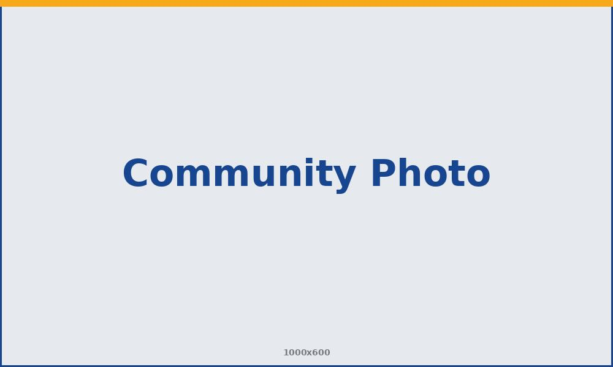

About Our Club
Friends and neighbors working together to strengthen Somers and reach beyond it — with fellowship, generosity, and a shared belief that service comes first.
A History of Service in Somers
Chartered in [Year Chartered], the Rotary Club of Somers was founded by a small group of residents who believed a town is only as strong as the neighbors willing to look after one another. What began as a handful of local business owners and volunteers meeting over lunch has grown into a dedicated club of [Number] members from every corner of the community.
For decades, our members have quietly rolled up their sleeves — raising funds for families in need, awarding scholarships to local students, improving parks and public spaces, and answering the call whenever the community needed a hand. We are proud to be part of Rotary District 7890 and the worldwide network of 1.4 million Rotary members.
Today we carry that same spirit forward: welcoming new members, forming lasting friendships, and turning good intentions into real projects that make Somers a better place to live.

The Rotary Mission
Rotary's mission is to provide service to others, promote integrity, and advance world understanding, goodwill, and peace through fellowship of business, professional, and community leaders. As part of that global family, the Rotary Club of Somers channels this mission into action close to home.
We believe in the power of people of action — everyday neighbors who see a need and choose to meet it. Whether the effort is local or worldwide, our work is guided by one simple idea captured in our motto: Service Above Self.
The Four-Way Test
Written in 1932 and adopted by Rotary worldwide, the Four-Way Test guides how our members treat one another and everyone we serve. Of the things we think, say, or do:
- Is it the TRUTH? We act with honesty and transparency in everything we do.
- Is it FAIR to all concerned? We treat every person and partner with fairness and respect.
- Will it build GOODWILL and better friendships? We strengthen bonds within our club and our community.
- Will it be BENEFICIAL to all concerned? We measure our work by the good it does for others.
What We Do in Somers
Fight Hunger
We organize food drives and support local pantries so no family in Somers goes without a meal.
Invest in Students
Our scholarship program helps graduating seniors take the next step toward college and career.
Improve Public Spaces
From roadside cleanups to park projects, we help keep Somers beautiful for everyone.
Support Seniors
We partner with local groups to help older neighbors stay connected and cared for.
Build Fellowship
Weekly meetings and social events turn service into lasting friendships across our town.
Serve Globally
Through Rotary International, we join worldwide efforts to eradicate polio and support clean water.
Come See What Rotary Is All About
Guests are always welcome. Join us [Meeting Day] at [Meeting Time] at [Venue Name] to meet our members and learn how you can get involved.
Visit a Meeting